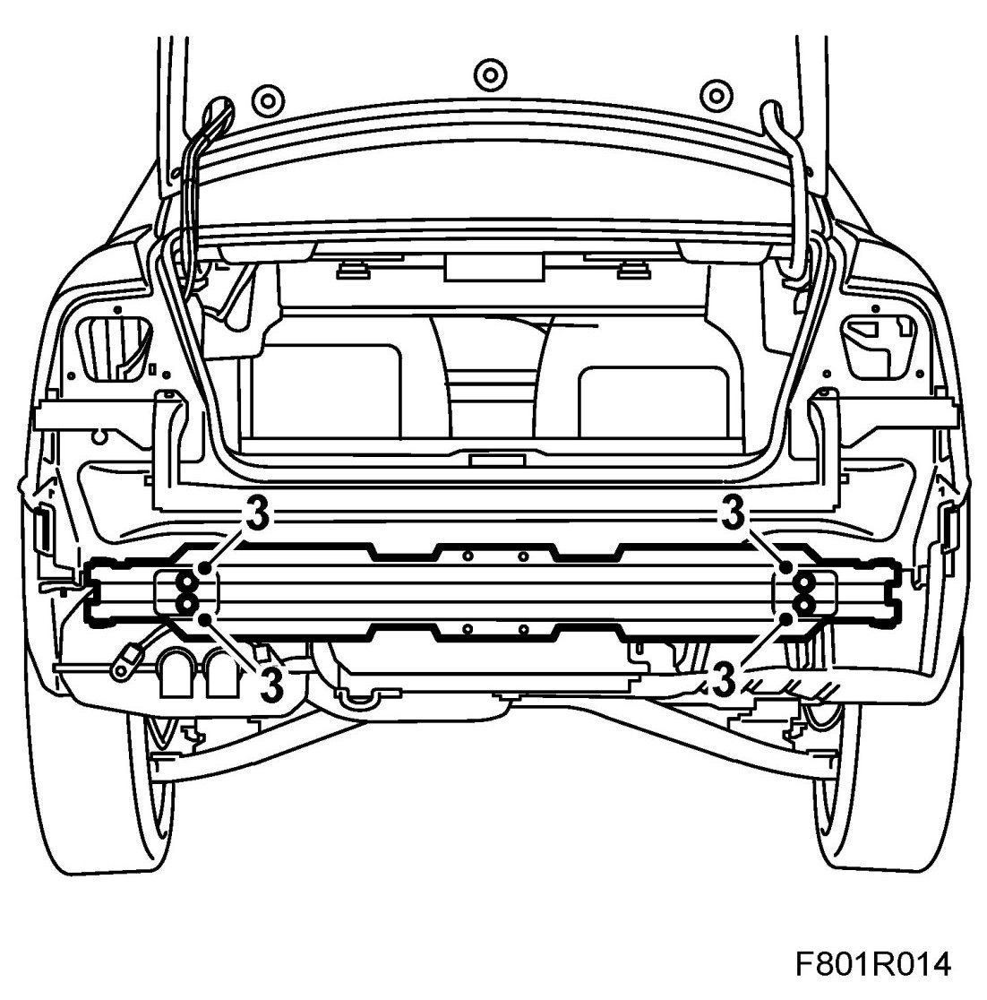
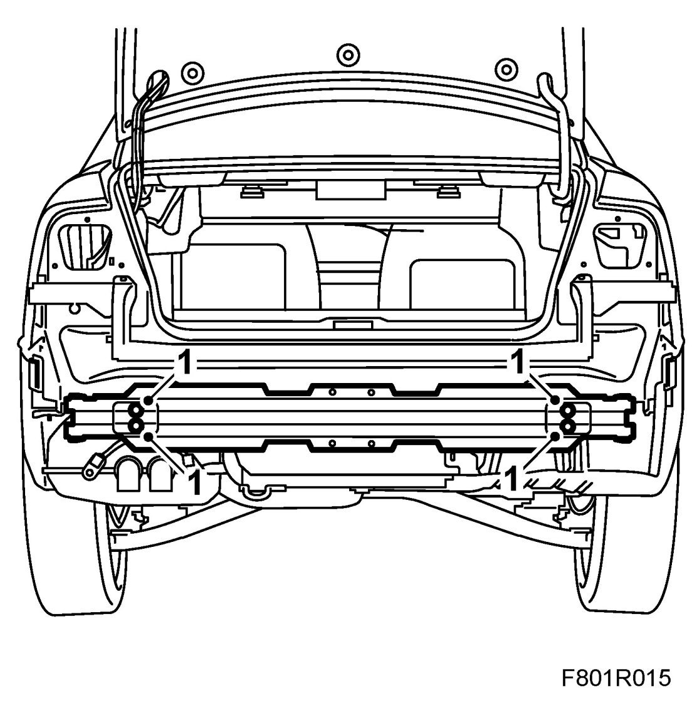

Bumper Member, Rear
Bumper Member, Rear
To remove
1. Raise the car.
2. Remove Bumper shell, rear, 4D or Bumper shell, rear, 5D.
3. Remove the bumper member nuts. If the car is damaged, it may be necessary to cut out a piece to reach the nuts.

To fit
NOTE: The rear frame member does not have any spacers on older cars. New spacers must therefore be fitted when changing the bumper member.
1. 5D: Fit the spacers onto the studs.
Put in the bumper member. Guide in the member first through the guide hole on the top left-hand side. Fit the bumper member nuts.

2. Fit Bumper shell, rear, 4D or Bumper shell, rear, 5D.
3. Lower the car.